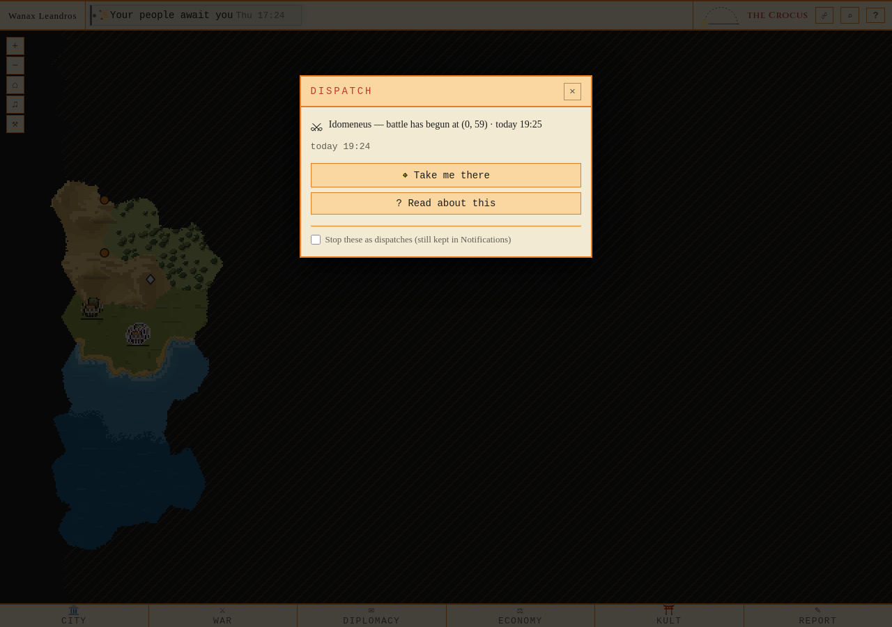
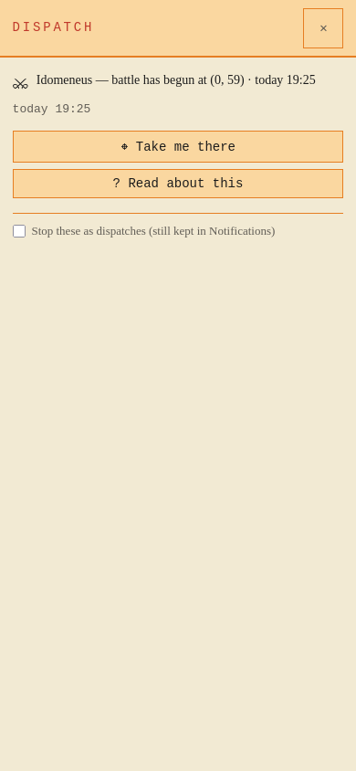

Own fresh PostgreSQL/Redis/server; normal UnitArrival worker wrote the notice. No production access. Firefox 1280 × 900 and 390 × 844. Idomeneus attacks Leandros’s field force. Desktop opened from its real live chip; mobile opens the same archived payload.
Contract, tests and limitations · Runtime proof · Actual WebSocket frame

